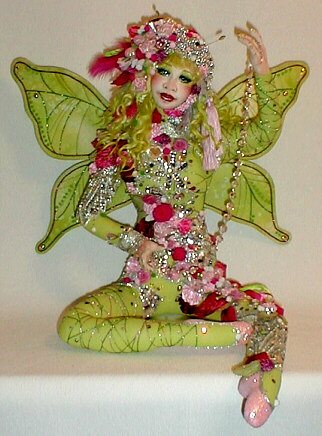

"Tourmaline" "Tourmaline" is a doll that I started in a three-day class at Doll University in 1999 under the guidance of the very talented Susie Oroyan. I was thrilled and honored to be able to send her, at Susie's request, to elinor peace bailey's exhibit in Yokohama, Japan, to be held in November, 2000.
"Tourmaline" is a butterfly fairy, created in the colors of one of my favorite semi-precious stones, the "watermelon tourmaline". She holds a string of pink lead crystal.....another gift of the earth from the land of my heritage, Slovakia.
|